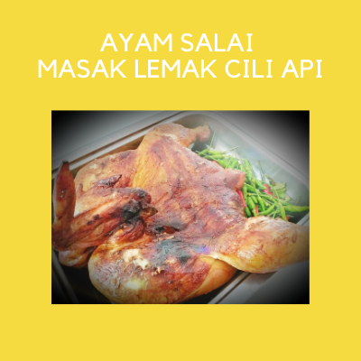
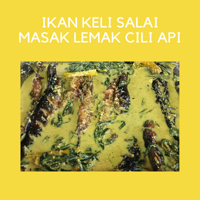
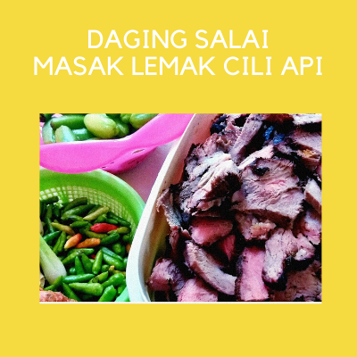
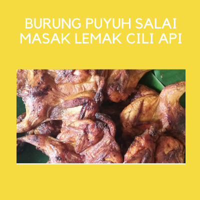
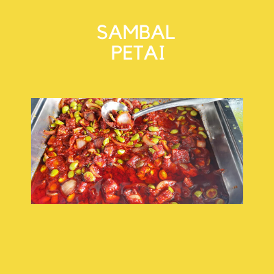
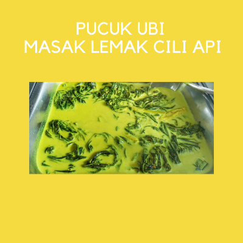
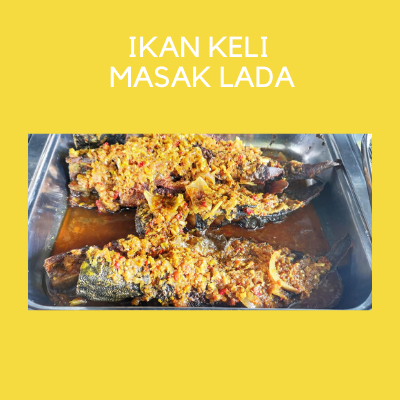

SIGNATURE DISH




"SALAI" means smoked. This is another way of cooking style that can be use other then using stoves. The process of making smoked dishes are just the same as barbeque process. The difference is they cook it using coir only instead of charcoal. Using coir can made the dish smells good, tasty and also healthy. This kind of smoked dish is hard to look for when someone in Kuala Lumpur wanted to try it. Some eateries or restaurants claimed that they serves smoked dish but actually they are not IF they use charcoal to cook it and it is not called as "SALAI" but called as "BAKAR". People who loves to eat smoked dished will know the difference by just smelling at it.
OTHER DISH



These are the other dish that will be serves along with the signature dish as well. There are a lot more but to know every updates about daily menu. Customers should follow Salai Salai Waghi Fik social media accounts which the instagram and facebook.
Breakfast : Fried Mee Hoon, Fried Mee, Fried Kuey Teow, Fried Rice, Lempeng, Coconut Lempeng, Nasi Lemak Pandan & Cakes.
Lunch : Smoked Catfish, Smoked Meat, Smoked Quail, Fried Catfish with Chillies etc.
Operation Hour : 8:00 am - 3:00 pm
Customers Capacity : 30 Customers (At 1 time)